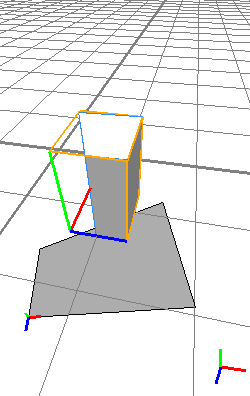

rotate operation
Synopsis
rotate(mode, coordSystem, xAngle, yAngle, zAngle)
Parameters
-
mode
(abs | rel) Absolute or relative mode. Absolute means the angles are set to the given value, relative means the angles are added. -
coordSystem
(scope | pivot | object | world) Name of the coordinate system in which the following angles are given. - xAngle (float), yAngle (float), zAngle (float)
Angles in degrees to rotate about each axis.
The rotate operation rotates the scope around the scope origin. The angles can be defined in any coordinate system, and the rotation can either be absolute (= set the angles) or relative (= add the angles). This operation manipulates the scope orientation (scope.r attribute).
Related
Examples
Set scope orientation to world coordinate system angles
 |
Using the absolute mode, the scope orientation can be set to an orientation relative to the world origin. |
Copyright ©2008-2019 Esri R&D Center Zurich. All rights reserved.